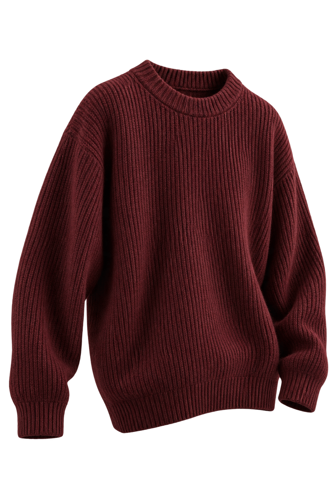
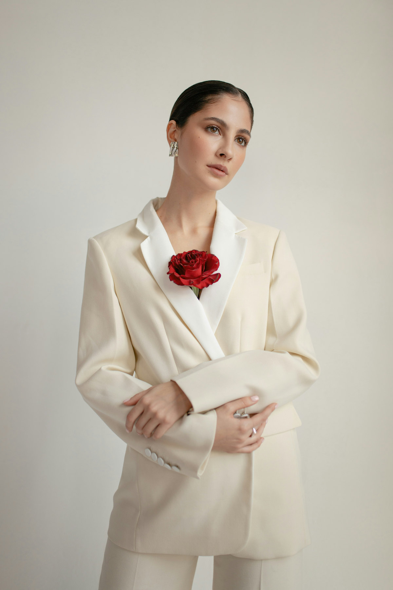
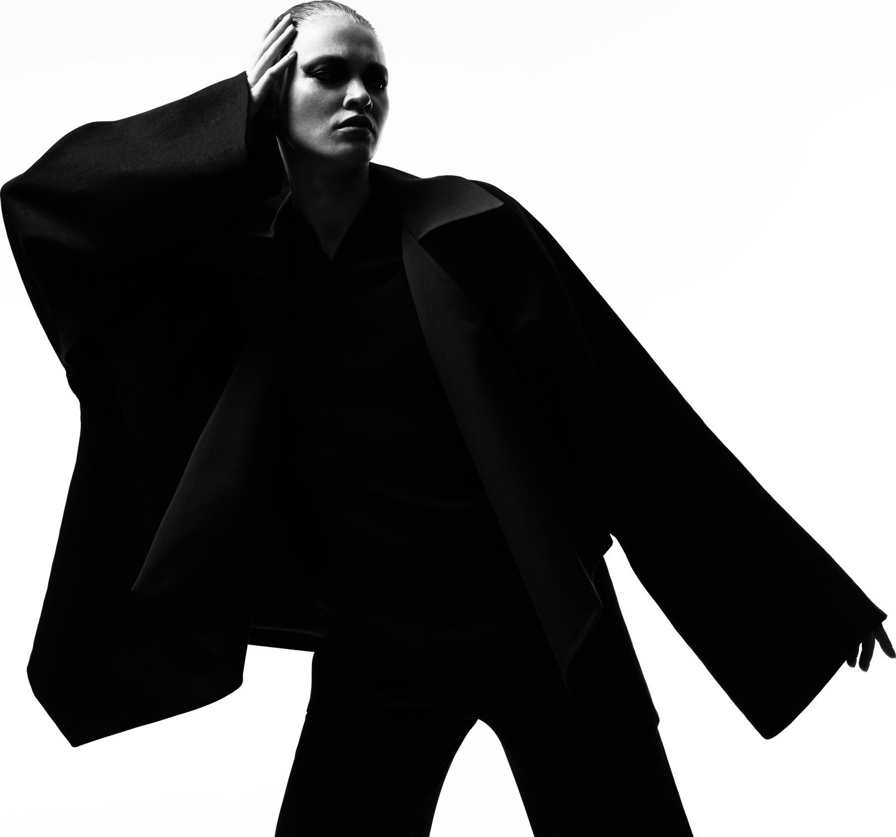
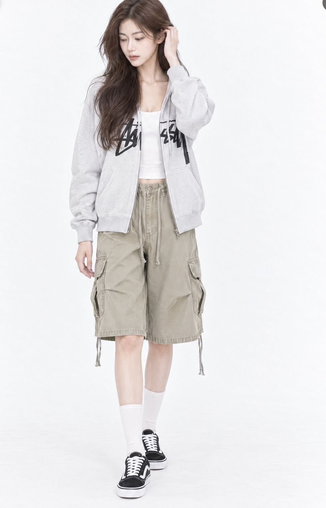
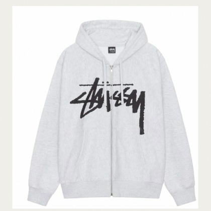
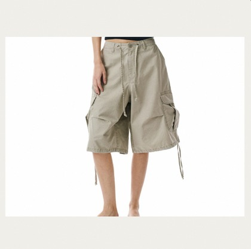
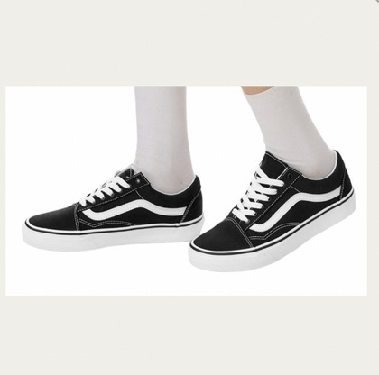
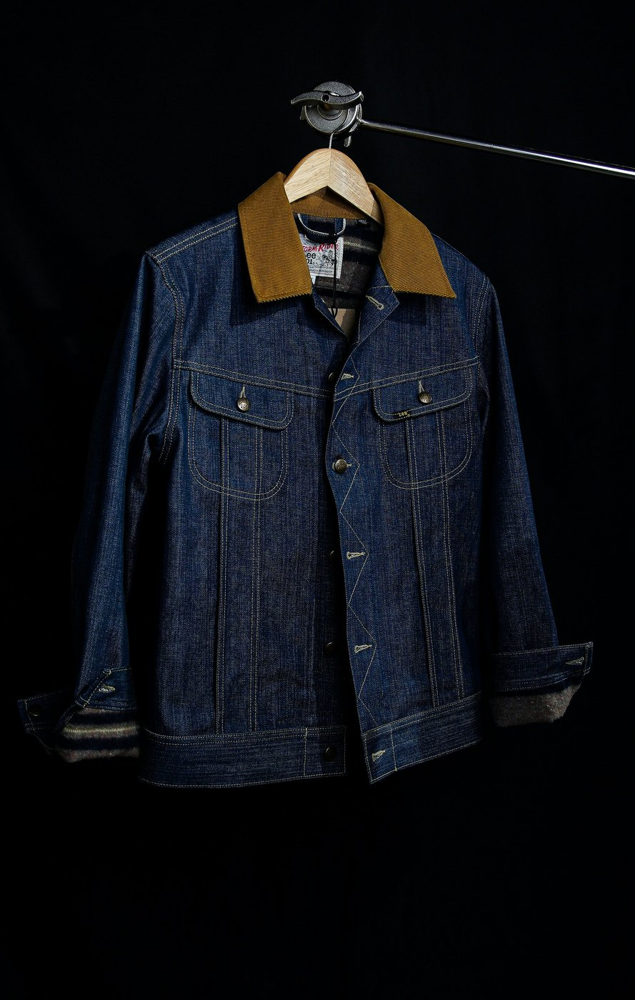

FEEDıT
01 / THINKFEEDiT이
FEEDiT이
뭔데?
MORE FEEDS. MORE QUESTIONS.
정보는 많아졌는데,
선택은 왜
더 어려울까요?
누군가는 유행이라고 하고, 누군가는 곧 지난다고 합니다.
가격은 보는 곳마다 다르고, 옷 하나를 고르기 위해 우리는 너무 많은 창을 열고 있습니다.
발견검색비교다시 검색 ↺
01 IMPACT
더 많은 정보가 아니라,
THE REASON WE STARTED
더 많은 정보가 아니라,
선택으로 이어지는 근거.
흩어진 패션 콘텐츠와 상품 정보가 서로 연결되지 않으면, 발견은 구매 판단으로 이어지지 못합니다.
자주 보이네.TREND OR JUST MY FEED?
잘 어울릴까?TASTE & CONTEXT
조금 더 기다릴까?PRICE & TIMING
자주 입게 될까?SOMEONE ELSE'S OPINION
THE MISSING CONNECTION
그래서 우리는, 흩어진 패션 신호를
하나의 흐름으로 연결하기 시작했습니다.
02 THINK
흩어진 신호를,
COLLECT. CONNECT. UNDERSTAND.
흩어진 신호를,
하나의 판단 근거로.
상품과 콘텐츠를 모으고, 같은 기준으로 정리하고, 시간에 따른 변화를 읽습니다.
01 / FEED↘
모으고.
커머스와 콘텐츠에 흩어진
패션 정보를 한곳으로.
02 / EDIT→
버건디와인 컬러BURGUNDY
연결하고.
다른 표현과 흩어진 기록에
공통된 기준을 만들고.
03 / READ↗
이해합니다.
한순간의 인기 너머,
시간에 따라 바뀌는 흐름까지.
BEYOND WHAT'S TRENDING
많이 보인다는 것과,지금 살 만하다는 건다르니까.
유행, 시점, 가격. 서로 다른 질문에 맞는 근거를 함께 살펴봅니다.
트렌드 온도수명주기할인율 변화
FEEDiT / INSIGHT설명용 예시

THE SAME ITEM. A NEW PERSPECTIVE.
버건디 니트
지금 얼마나 주목받고 있을까?관심의 흐름
✳ 한 번의 순위보다, 관심이 어떻게 달라지는지를 함께 봅니다.
“그래서,
내 경우에는?”
FEEDiT은 숫자를 보여주는 데서 멈추지 않습니다.
AI가 질문의 맥락을 읽고, 관련된 근거를 정리해 다음 선택을 돕습니다.
질문 이해→근거 확인→선택 지원
흩어진 순간을,
결정의 흐름으로.
문제와 구매 사이, FEEDiT은 네 번 움직입니다.
01 / FEED — 모으다
흩어진 신호를
흩어진 신호를
한 피드로.
SNS·숏폼·커뮤니티·쇼핑의 움직임을 한곳에 모아, 지금 봐야 할 신호부터 보여줍니다.
FEEDiTFASHION TREND AI

EDITORIAL SIGNAL 08 LIVE SIGNALS지금 뜨는
지금 뜨는
패션만 남겼어요.
- 01발레코어+91%
- 02드레이프 셔츠+68%
- 03오프화이트 수트+42%
✦ 발레코어, 지금 사도 괜찮을까?→
02 / EDIT — 고르다
언급량보다
언급량보다
흐름을 읽습니다.
상승 속도·반응·수명 주기를 함께 분석해 반짝 노이즈와 진짜 트렌드를 구분합니다.
FEEDiTTREND ANALYSIS · 2026.09
TREND TEMPERATURE
82°오버사이즈 테일러링

03 / VTON — 입어보다
고민한 룩을,
고민한 룩을,
먼저 입어봅니다.
아이템을 종류별로 고르면 AI가 하나의 코디로 합성해, 구매 전에 전체 실루엣과 조합을 확인할 수 있습니다.
FEEDiTVIRTUAL TRY-ON · 코디 입혀보기

VIRTUAL FITTING
고른 아이템,
고른 아이템,
한 벌로 봅니다.
여성 모델남성 모델

상의후드 집업
하의카고 하프팬츠
신발로우 스니커즈
04 / DECIDE — 결정하다
분석을
분석을
구매의 확신으로.
트렌드 지표와 취향이 비슷한 사람들의 선택을 상품 옆에 붙여, 비교에서 결제까지 끊김 없이 연결합니다.
FEEDiT살까, 말까.

102명이 함께 고민 중취향 일치도 91%이 데님,
이 데님,
지금 사도 될까?
살!72%말!28%
- 트렌드 온도82°
- 예상 잔여 수명11주
- 가격 매력도GOOD
01/ 04
AUTO · 3 SEC